What is a group?
When we say group, it consists of a set $X$ and a binary operation $\star$ on the set, which satisfies the following properties:
- For any elements $a,b,c\in X$, we have $(a\star b)\star c=a\star(b\star c)$.
- There is an identity element $e\in X$. It satisfies $a\star e=a$ and $e\star a=e$ for every $a\in X$.
- For every element $a\in X$, it has an inverse element $a^{-1}$. It satisfies $a\star a^{-1}=e$ and $a^{-1}\star a=e$.
If these properties are satisfied, we say that "$X$ is a group under the $\star$ operation". This group commonly notated as $(X,\star)$.
Here are two examples of groups which might be more familiar to you:
$(\mathbb Z,+)$ is a group
Let $\mathbb Z=\{\ldots,-3,-2,-1,0,1,2,3,\ldots\}$ be the set of all integers, and $+$ be the
addition operation. Then $\mathbb Z$ is a group under addition because it has these properties:
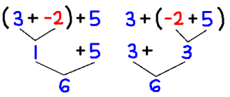
Addition is associative: no matter how we group together the terms of a sum, we always get the same result! |
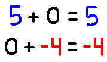
Among all the integers, 0 is a very special: Whatever we try to add with 0, the number won't change! We could say that 0 preserved the identity of the original number. |
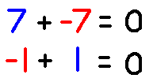
Finally, every integer has its additive inverse, also called its inverse element. Whatever number we choose, there's always some number that can "cancel" it out to 0. |
$(\mathbb Q^\times,\times)$ is a group
Let $\mathbb Q^\times$ be the set of all
nonzero rational numbers. Anything of the form $\dfrac ab$ where $a,b$ are
nonzero integers.
Let $\times$ be the
multiplication operation. Then $\mathbb Q^\times$ under multiplication is another example of a group:
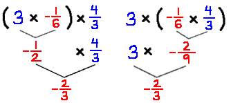
Like before, multiplication is also associative. |
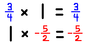
This time, the special identity element is 1. Whatever we try to multiply with 1, the number won't change! |
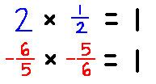
Every positive number has its reciprocal. When multiplied to the original number, it "cancels" out to our special number, 1! The reciprocal of a number is its inverse element. |
This next example is quite different because it is not commutative:
$D_8$ is a group
Let's say you took some image, and you wanted to transform it. You open your favorite image editor, and realize there are only two buttons, labeled "
r" and "
s".
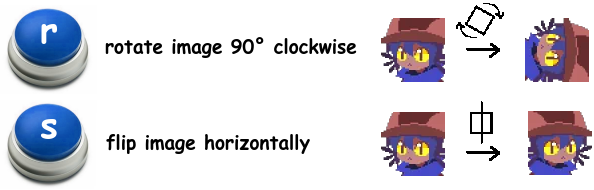
With only these buttons, we can produce other transformations by
composing them together, which just means applying one after the other.
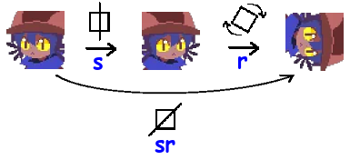
Let $\cdot$ be the composition operation. Using the composition operation, we obtain 8 different transformations:
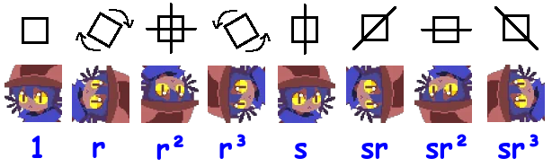
This set is
closed under the composition operation, because the composition of any two transformations always leads us back to this set.
It turns out, this set equipped with composition forms a group. This group is more commonly known as the
dihedral group of order 8, denoted as $D_8$.
$$D_8=\{1,r,r^2,r^3,s,sr,s^2,sr^3\}$$
Intuitively, composing transformations is associative.
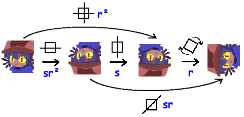
If we compose the first two, then compose with the third, the result is "r3".
If we instead do the first operation, then the composition of the other two, the result is still the same!
$$(sr^2\cdot s)\cdot r=sr^2\cdot(s\cdot r)$$
We can view composition as a sort of "shortcut" obtained from chaining multiple operations together. |
This group has an identity element. Can you guess what it is?
Yep, its just "1", the transformation that does nothing.
|
Every single image transformation can be inverted.
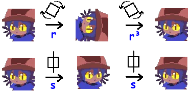
If we rotate by 90° clockwise "r", we can rotate it 3 more times to put the image back to normal.
If we flipped horizontally "s", we can flip it again to put it back to normal.
$$r^{-1}=r^3\qquad s^{-1}=s$$ |
Abelian and non-abelian groups
You might notice that the first two examples are commutative, while the last one is not.
A group is called abelian if the operation is commutative: $a\star b=b\star a$ for all $a,b\in G$.
If it is not commutative, the group is called non-abelian.
Non-examples
Now that we've seen three different examples, let me give some non-examples of groups.
$(\mathbb N,+)$ is NOT a group.
Let $\mathbb N=\{1,2,3,\ldots\}$ be the set of all positive integers, and $+$ be addition.
$\mathbb N$ does NOT form a group under addition because there is no identity element from that set.
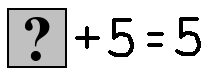
0 would fit the equation, but it's not part of $\mathbb N$.
|
|
$(\mathbb Q,\times)$ is NOT a group .
Let $\mathbb Q$ be the set of all rational numbers, and $\times$ be multiplication.
Although 1 is an identity element, $\mathbb Q$ does NOT form a group under $\times$ because 0 has no inverse element from that set.
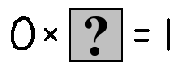
This is why in our example earlier, 0 had to be removed in $\mathbb Q^\times$.
|
Let's resume with giving a couple more examples of groups to let you be more familiar with them! You should try to verify that all of the following are also groups.
Abelian groups
These are groups where the operation is
commutative.
Modulo arithmetic 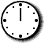
Let $C_n=\{0,1,2,\ldots,n-1\}$. In this group, the operation is adding two numbers $a+b$ modulo $n$.
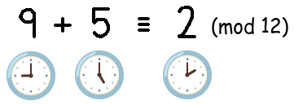
This is also known as the cyclic group of order $n$.
Instead of $C_n$, most people would also denote it by $\mathbb Z/n\mathbb Z$. |
Unit circle
Let $S^1=\{z\in\mathbb C:|z|=1\}$ be the set of all complex numbers on the unit circle, and $\times$ be multiplication.
You should verify that for any $z_1,z_2\in S^1$, it is true that $z_1z_2\in S^1$.
$(S^1,\times)$ forms the circle group.
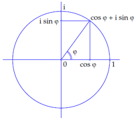 |
Trivial group
This group only has one element: $\{1\}$, and an operation $\cdot$ where $1\cdot1=1$.
It is the trivial group.
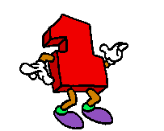 |
Non-abelian groups
These are groups where the operation is
not commutative.
Symmetric group 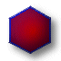
Let $S_n$ be the set of all permutations on $n$ objects.
Composing two permutations would lead to new permutation, so $S_n$ forms a group under the composition operation.
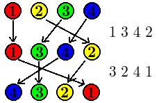
This is also known as the symmetric group of order $n$. |
Rubik's Cube 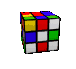
Let $G$ be the set of every shuffle of moves you could do on a Rubik's Cube, and $\cdot$ be the composition of cube moves.
Then, $(G,\cdot)$ forms the Rubiks Cube group.
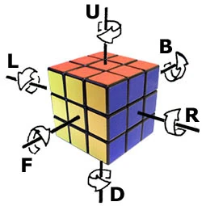 |
Matrix multiplication
Let $M_n$ be the set of all invertible $n\times n$ matrices.
The product of any two invertible matrices is invertible, so $M_n$ forms a group under matrix multiplication.
$$\begin{pmatrix}0&1\\2&3\end{pmatrix}\cdot\begin{pmatrix}4&-5\\1&2\end{pmatrix}=\begin{pmatrix}1&2\\11&-4\end{pmatrix}$$
It has the fancy name: the general linear group of degree $n$. |
Product group
Another important example comes from combining groups together,
like a Frankenstein monster.
Let $(G,\star)$ and $(H,*)$ be two groups. Then a
product group $(G\times H,\cdot)$ is defined as follows:
The elements of the group are ordered pairs $(g,h)\in G\times H$. The group operation is
$$(g_1,h_1)\cdot(g_2,h_2)=(g_1\star g_2,h_1\star h_2)$$
Isomorphism
Sometimes, we'll encounter two different groups which happen to "behave exactly the same way". Here are some examples:
Even integers behave the same way as integers
Let $\mathbb Z$ be the set of all integers, and $2\mathbb Z$ be the set of all even integers. Both of these are groups under the addition operation.
It turns out, their elements "behave exactly the same way"! The 1 from $\mathbb Z$ behaves like the 2 from $2\mathbb Z$, and so on...
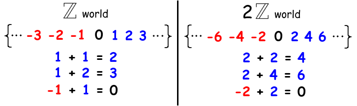
Its as if they're essentially the "same group". We can write this as $\mathbb Z\cong2\mathbb Z$.
$\mathbb Z/10\mathbb Z$ behave the same way as $\mathbb Z/2\mathbb Z\times\mathbb Z/5\mathbb Z$.
A slightly more advanced example.
Let $\mathbb Z/10\mathbb Z=\{0,1,2,\ldots,9\}$ be the group of integers modulo 10, and similarly define $\mathbb Z/2\mathbb Z=\{0,1\}$ and $\mathbb Z/5\mathbb Z=\{0,1,2,3,4\}$.
This may not seem obvious, but there is actually direct correspondence between the elements of $\mathbb Z/10\mathbb Z$ and the elements of the
product group $\mathbb Z/2\mathbb Z\times\mathbb Z/5\mathbb Z$!
One way we could see it is by separating every integer in $\mathbb Z/10\mathbb Z$ into its modulo 2 and modulo 5 counterparts.
For example, the 7 in $\mathbb Z/10\mathbb Z$ gets turned into (1,2) in $\mathbb Z/2\mathbb Z\times\mathbb Z/5\mathbb Z$, because 7 = 1 (mod 2) and 7 = 2 (mod 5).
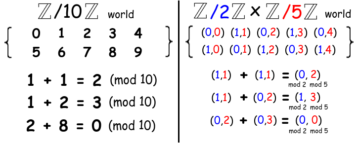
We can write this as $\mathbb Z/10\mathbb Z\cong\mathbb Z/2\mathbb Z\times\mathbb Z/5\mathbb Z$.
(For those who know
Chinese Remainder Theorem, we can generalize this for any primes $p$ and $q$. $\mathbb Z/pq\mathbb Z\cong\mathbb Z/p\mathbb Z\times\mathbb Z/q\mathbb Z$.)
If two groups happen to behave in exactly the same way, we say that these two groups are
isomorphic to each other! The elements behave exactly the same, and the only difference between these two groups is the
labelling of these elements.
Okay, but how do we
rigorize this notion of "isomorphism"? Well, we only need to look what the group operation does to these elements! If a relabelling of elements exists between the two groups, such that the underlying "structure" of that operation is preserved, then we know they are isomorphic.
An isomorphism between two groups $(G,\star)$ and $(H,*)$ is defined to be a
bijection $\phi:G\to H$ satisfying
$$\phi(g_1\star g_2)=\phi(g_1)*\phi(g_2)\quad\text{for all }g_1,g_2\in G$$
Essentially, this is just a fancy way of saying that $\phi$ is a "relabeling" of elements in $G$ to be those of $H$, so that every interaction between elements are preserved.
NOTE Isomorphisms might NOT be unique
There may be more than one isomorphism between two isomorphic groups!
For example, another possible isomorphism between $\mathbb Z$ and $2\mathbb Z$ is by multiplying every by -2 instead.
This time, the 1 from $\mathbb Z$ corresponds with the -2 from $2\mathbb Z$.
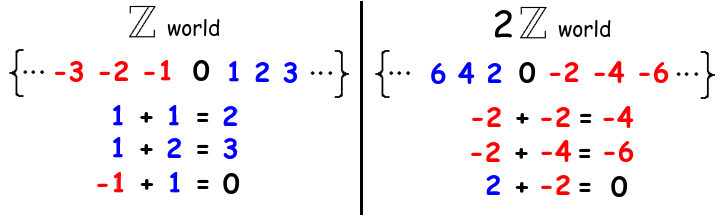